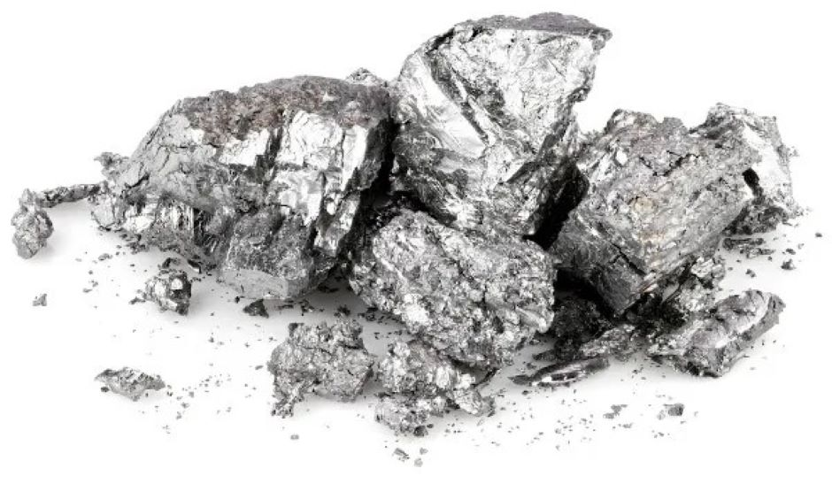

O que é Berílio?
O Berílio é um elemento químico de símbolo Be, seu número atômico é o 4, onde sua massa atômica é de 9u. O Berílio é um elemento alcalino-terroso, bivalente, tóxico de coloração cinza, duro mas leve, ele é quebradiço e sólido na temperatura ambiente, e pertence ao grupo 2 dos metais da tabela periódica.
